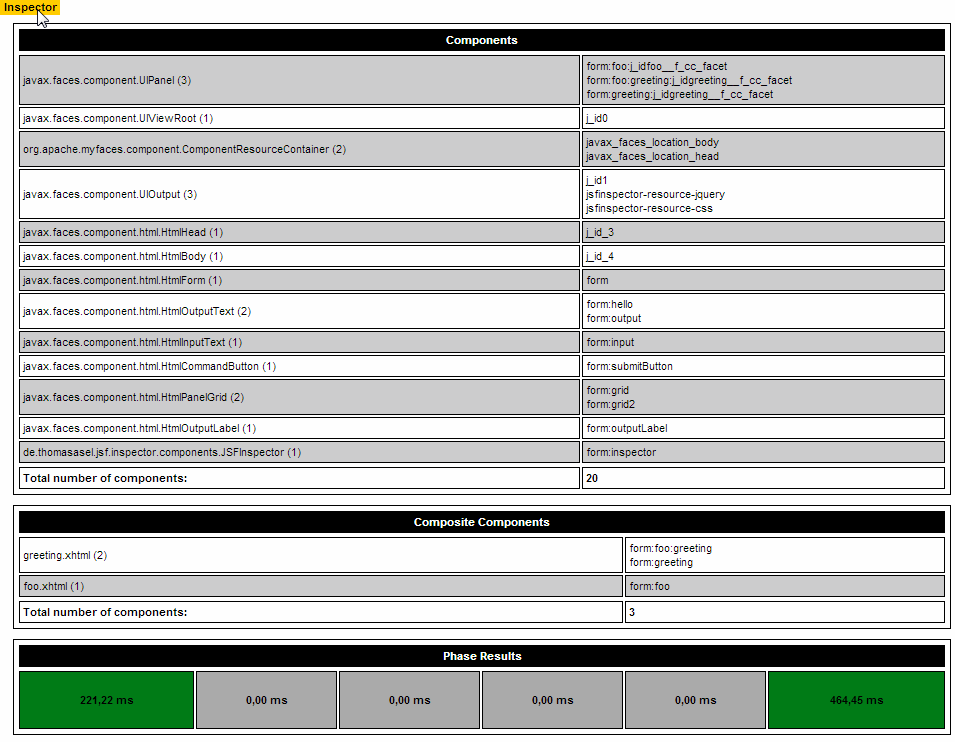

A library to make life of JSF developers a bit easier. Ever wondered whats in the component tree or why a component doesn't show up? JSFInspector helps to investigate the issue. JSFInspector is used during development time. It comes as handy JAR file, no special IDE or plugin required.
Get started!
<html xmlns="http://www.w3.org/1999/xhtml"
xmlns:h="http://java.sun.com/jsf/html"
xmlns:i="http://thomas-asel.de/jsfinspector">
...
<i:inspector />
...
</html>
JSFInspector is displayed as a unobtrusive clickable panel on the ipper left corner of the screen. This ist to ensure that the existing layout is not affected when JSInspector is used an every page (e.g. by defining it in a template). JSFInspector is only displayed if JSF is running in develoment mode. This is what JSFInspector looks like in a typical scenario:
